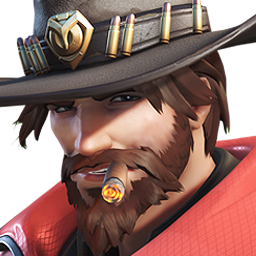

Akande Ogundimu es un peleador altamente calificado y un líder natural que perdió su brazo derecho durante la Crisis ómnica y luego se unió a Talon. Ahí ascendió de rango y asesinó a su jefe, quien era el Doomfist anterior, para después tomar su arma y título homónimo. En la actualidad está decidido a sumergir al mundo en un nuevo conflicto tras sus misteriosos propósitos personales.
Heroes
Tanque
Daño
Soporte
